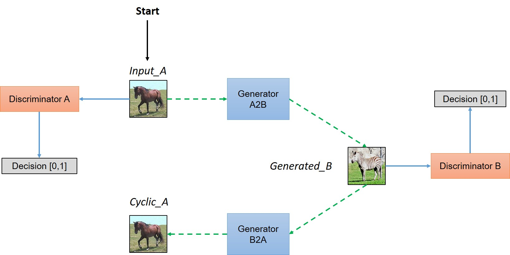

The GSoC coding period is coming to an end and it is time to reflect upon what all has been achieved, what could’nt be done and what can be done more in future. My project was aimed at enriching the model zoo of Flux.jl by making additions in the form of gans, reinforcement learning agents and an image-captioning network. Precisely the following models have been implemented as a part of the coding period :
- CycleGAN
- pix2pix
- SRGAN
- Proximal Policy Optimization
- Trust Region Policy Optimization
- Deep Recurrent Q Learning
- Neural Image Captioning
These were exactly the part of the proposal as well. Let’s go one by one over explaining the work, analysing what has been achieved and what was lacking in each period.
The Generative Adversarial Networks
Clubbed under these are the models CycleGAN, pix2pix and Super-Resolution-GAN. These have been added to model-zoo in the following PR : #157
CycleGAN and pix2pix are multi-modal image-to-image translation networks. pix2pix learns the translation in one direction at a time during training and works with paired labels. Some cool instances of it’s working are colorising sketches or generating buildings from segmentation maps. CycleGAN learns a combined translation between both the domains during training. The improvement aided here is that it does not need any paired labels. pix2pix has a generator and a discriminator and apart from normal adversarial loss, works with a L1-constraint to improve the quality of the images. CycleGAN has a generator and a discriminator for each of the domains. The complete tutorial was covered in a previous post and can be found here.
Super-Resolution-GAN is another cool application of GANs. It basically takes a downgraded version of a high-quality image and learns to map it back to the high resolution. It uses an interesting Pixel-Shuffle layer which permutes a feature map along channels and resizes it to obtain an upsampled version of the output. As this layer was not a part of Flux, it was used manually. The generator extracts the features from the low-resolution image and uses the pixel-shuffle operation to obtain the high-resolution output.

Sample Results
Sample output of `pix2pix` trained on `facades` dataset
Sample output of `pix2pix` trained on `facades` dataset
Challenges faced
During the initial phase of training, the network was taking too long to train when compared with the pytorch and tensorflow counterparts. As discussed with my mentors, the suggested hack was to integrate #335 to the speedup. But due to time constraints and a plethora of work left to do, the problem was circumvented by making the networks smaller. The new networks are known to give decent results on other frameworks and so the reduction could be justified. The final status of training was that the models were overfitting in case of pix2pix and manually tuning hyperparameters was’nt that successful. So all in all the models have’nt been trained and tuning of hyper-parameters is still left.
What has been achieved
What has’nt been achieved
- Training the models successfully
Future Work
- Tune the hyper-parameters and try training on a small dataset first
- Experiment with architectures from stable implementations in other libraries and use the hyperparameters therein
The Reinforcement Learning Baselines
As a part of my proposal, I had to implement Trust Region Policy Optimization, Proximal Policy Optimization and Deep Recurrent Q-Networks. This was the part that most appealed to me, because the consequences were two fold :
- There were quite a few networks as a part of model zoo for computer-vision models, but not many diverse models in terms of reinforcement learning.
- RL has shifted focus to new state-of-the art models for policy gradients like
TRPOandPPOand adding them would attract many people to do RL in julia.
Realising that a general API was required now for the policy gradient methods which TRPO and PPO heavily share, I decided to create the package along the lines of the openai-baselines.
The code is maintained in the this repository. The code for the recurrent-q-network can be found in the drqn branch.
A PR regarding the same has been added here.
A Peek Into The API
Before talking about the models, let’s look at what the structure of the package is like.
In general, with the type of environments available currently in Gym.jl, the action space can either be Discrete or Continuous. We define a CategoricalPolicy structure to handle the Discrete action spaces and DiagonalGaussianPolicy to handle Continuous action spaces. The functions for entropy, kl-divergence, etc. are a part of each policy and are defined in policy.jl in the common/ directory.
In order to create a policy, an environment wrapper instance is to be created. It takes in just the environment name and accordingly obtains all the information such as STATE_SIZE and ACTION_SIZE from the envionment. This is used as an abstraction for initializing the policy.
# Define environment wrapper instance
env_wrap = EnvWrap(ENV_NAME)
# Define policy
# The policy can currently either be `Catrgorical` or `DiagonalGaussian`
policy = get_policy(env_wrap) # Returns the policy based on the environment type
next_state = action(policy,state) # Take an action in current state
# Get log-probability of current action
logp = log_prob(policy,states,actions)
# Extract out the neural network parameters for the policy
policy_params = get_policy_params(policy)
value_params = get_value_params(policy)
# I/O
save_policy(policy,"PATH_TO_SAVE")
policy = load_policy(env_wrap,"LOAD_PATH")
Similarly other utilities in terms of kl-divergence and entropy are defined in policy.jl.
This is done to abstract out the policy definition to allow for easy extensibility of the code in future with newer environments and models. We also define a Buffer structure to log different variables and their values. For both trpo and ppo a file called rollout.jl handles all code for parallelly running agents, collecting trajectories of experiences and processing the trajectories to extract out all relevant information from them. The basic structure being covered, let us understand about the model implementations.
eb = Buffer() # Create an episode buffer
# This will be used to log different variables as time progresses
register(eb,"states")
register(eb,"actions")
register(eb,"rewards")
register(eb,"next_states")
register(eb,"dones")
register(eb,"returns")
register(eb,"advantages")
register(eb,"log_probs")
register(eb,"kl_params")
# Clear and reset all variables in buffer
clear(eb)
# Access the data stored for a particular key in the buffer
eb.exp_dict["key"] = ... # You can directly modify this variable
# OR
add(eb,"rewards",1.0) # Assuming the value for the key is an array, this will push the value into it
As defined in rollout.jl :
function collect_and_process_rollouts(policy,episode_buffer::Buffer,num_steps::Int,stats_buffer::Buffer)
"""
This function collects rollouts along multiple parallel actors and processes them
It populates the values in the different variables of the `episode_buffer`
episode_buffer : Buffer to store collect and store information along trajectories
num_steps : Number of timesteps to collect in a trajectory
stats_buffer : To log variables for analysis
"""
TRPO tries to solve the problem of policy updates by not letting the policy change by a large margin in each step and at the same time theoretically giving a garuntee on the improvement in the total expected return at each time step. It does this by solving the constrained optimization problem by making approximations to the contraint and a formulated surrogate loss function. The implementation involves using some nifty details like Hessian-Vector-Product computation and optimization using Conjugate-Gradients. It took quite a lot of time to digest these concepts and after reading throgh stable pieces of code and gluing it all up, the model was built in pure julia.
PPO sort of simplifies the objective of TRPO by allowing for violation of the KL-Divergence constraint, but giving a much simpler policy update. It is easier to code up and in practice does quite well in comparision fo TRPO.
With the above API in place, the groud-up implementation of PPO is as simple as :
# Clear episode buffer
clear(episode_buffer)
# Collect information along trajectories
collect_and_process_rollouts(policy,episode_buffer,EPISODE_LENGTH,stats_buffer)
# Extract mini-batch information
i = minibatch_idx # Stores the batch indices for a particular mini-batch
mb_states = episode_buffer.exp_dict["states"][:,i]
mb_actions = episode_buffer.exp_dict["actions"][:,i]
mb_advantages = episode_buffer.exp_dict["advantages"][:,i]
mb_returns = episode_buffer.exp_dict["returns"][:,i]
mb_log_probs = episode_buffer.exp_dict["log_probs"][:,i]
mb_kl_vars = episode_buffer.exp_dict["kl_params"][i]
# Update the policy and value function parameters
ppo_update(policy,mb_states,mb_actions,mb_advantages,mb_returns,mb_log_probs,mb_kl_vars)
# Save the policy
save_policy(policy,"PATH_TO_SAVE")
Deep-Recurrent-Q-Networks is an extension of the work done last year by Tejan Karmali [ @tejank10 ]. The idea was basically to add a LSTM layer in the Q-network to process timesteps of experience than just a single timestep. The advantage of these models is that they can hangle Partially Observable Markov Decision Processes as well.
Alright, show me the results!
What has been achieved
PPOandTRPOtrained onPendulum-v0andCartPole-v0. [Note :TRPOwas’nt trained onCartPole-v0as nested AD is currently not supported forsoftmaxwhich is used for this environment and inTRPO]- A package along the lines of
openai-baselinesfor the model-zoo [#158]
What has’nt been achieved
- Proper convergence of training on
Deep-Recurrent-Q-Networks
Future work
With the Arcade Learning Environment being setup, it would be good to try out the models on those environments and obtain a few benchmarks with Flux
The Image Captioning Network
Coming to the final leg of my proposal, the idea was to impelement the paper Show and Tell.
The idea is pretty straightforward. Given an image, we extract features using a pre-trained CNN like VGG19 and cache them for efficiency. This is used as an input to a LSTM cell which further gets the subsequent caption words and learns to predict, sequence-wise, the next word in the caption. The training was done on the MSCOCO dataset. Overall, results were average, and can be found in the Test.ipynb jupyter notebook here.
Let’s describe some images
Here is the output of the network on random images from the internet :
A young man is walking his bicycle across the street
A kitchen with a sink and a refrigerator
A group of men with his cap next to a woman in a kitchen
What has been achieved
- Model trained on
30000captions of theMSCOCOdataset. Work is to be added to the model-zoo with the reference to this PR.
Future work
- Add attention to the captioning network
- Train the network on a greater number of captions
The code and the results are available here.
Conclusion
Summarsing the past three months, it was indeed a great learning experience. I got to learn by implementing actual code and training complex RL-Agents from scratch, something I had never done before. It was filled with reading papers, some advanced math and trying to put it all into code. The community was equally helping and supportive at all times and I am really thankful to my mentors Dhairya Gandhi, Elliot Saba and Deepak Suresh, fellow GSoC/JSoC students especially Manjunat Bhat, Ayush Kaushal and Tejan Karmali and the entire Julia community for providing me with an invaluable experience over the summer. I look forward to contribute to the community in the coming times and will do justice to my love for open-source.